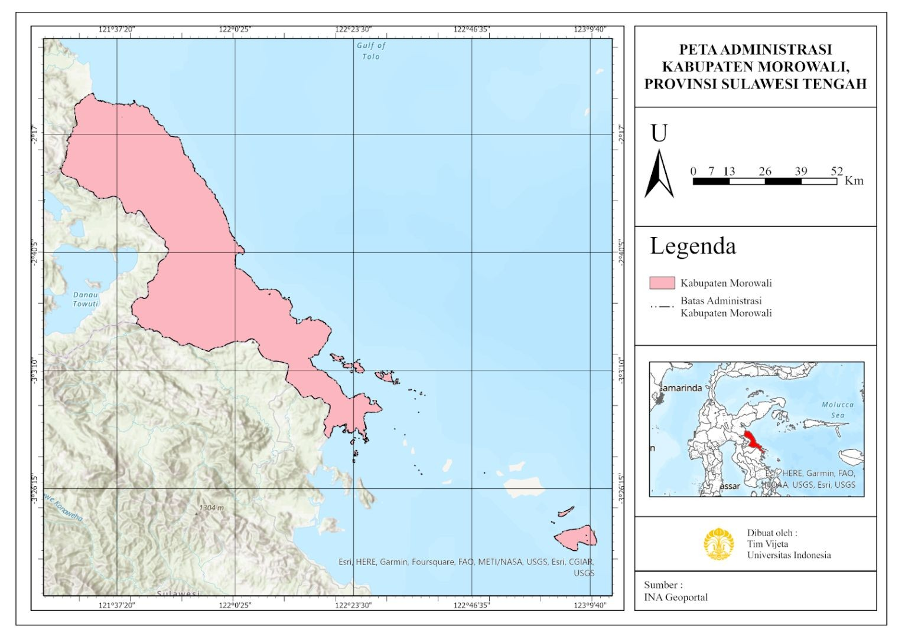
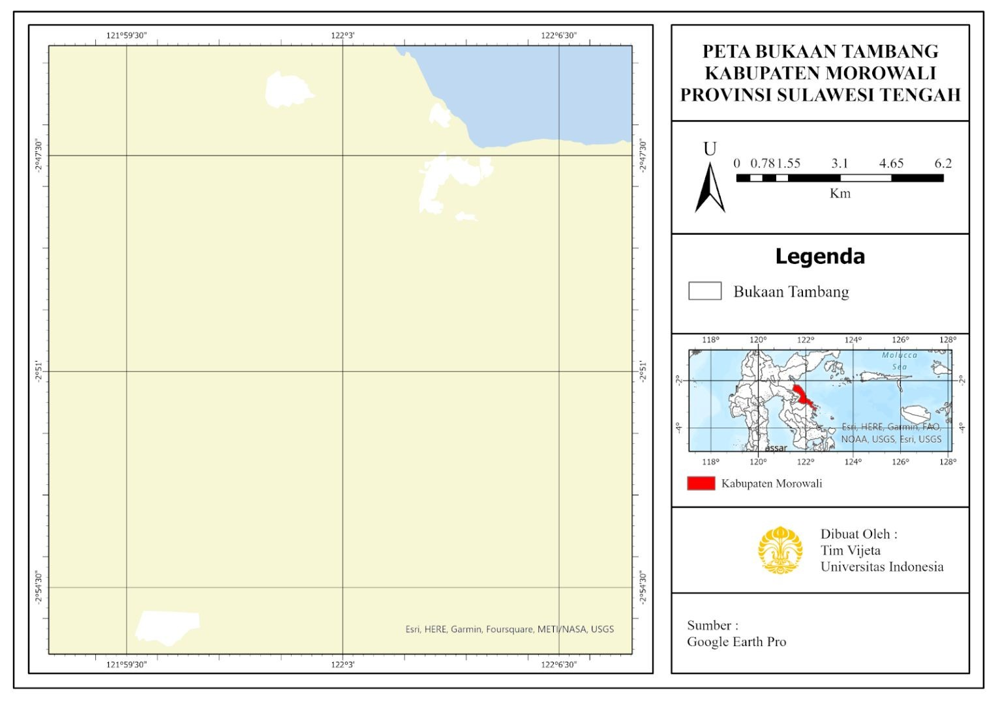

Signifikansi Destruksi Lingkungan di Kabupaten Morowali: Mengungkap Dampak Penambangan yang Mengkhawatirkan
Latar belakang
Pertambangan adalah penggerak penting ekonomi Indonesia. Ia membuka lapangan kerja dan mendorong pembangunan infrastruktur. Namun manfaat itu datang bersama harga yang harus dibayar lingkungan, mulai dari gangguan lahan, air, dan tanah, polusi udara, hingga dampak sosial budaya. Pola ini pernah berulang. Kasus pencemaran di Teluk Buyat, Duri (Riau), dan Danau Matano menunjukkan bahwa pengelolaan lingkungan sering diabaikan demi keuntungan.
Kabupaten Morowali di Sulawesi Tengah adalah tempat pola itu kini berjalan dalam skala besar. Wilayah ini kaya nikel dan menarik banyak investor, termasuk Kawasan Indonesia Morowali Industrial Park (IMIP), dan kehadiran tambang menuai respons positif sekaligus negatif dari masyarakat. Kajian ini menimbang keduanya. Seberapa besar manfaat yang diterima masyarakat Morowali, seberapa dalam dampaknya terhadap lingkungan, dan apakah upaya penanganan yang ada cukup untuk menekannya.
Data yang digunakan
| Data | Format Data | Jenis Data | Sumber |
|---|---|---|---|
| Batas administrasi Kabupaten Morowali | Vektor | Sekunder | INA Geoportal |
| Bukaan tambang | Citra / digitasi | Sekunder | Google Earth Pro |
| Studi dan publikasi dampak tambang (sosial-ekonomi, lingkungan, kebijakan) | Dokumen | Sekunder | Jurnal dan berita (Demmallino dkk., Lampe, Syarifuddin, Usman) |
Metode
Untuk menimbang manfaat dan kerusakan, kajian ini memadukan studi literatur dengan data spasial. Studi literatur dari jurnal dan sumber berita mencakup dampak sosial-ekonomi, kerusakan lingkungan, dan kebijakan pemerintah terkait pertambangan nikel di Morowali. Data spasial digunakan untuk memetakan wilayah kajian dan bukaan tambang, sehingga pembahasan dampak dapat dikaitkan dengan kondisi geografisnya. Temuan kemudian dikelompokkan menjadi dampak positif, dampak negatif, dan upaya penanganan.

Hasil
Temuan utamanya adalah ketimpangan antara manfaat dan kerusakan. Manfaat tambang memang nyata tetapi cenderung sempit, sedangkan kerusakannya meluas ke hampir semua unsur lingkungan, mulai dari udara, tanah, sungai, hingga laut. Ringkasannya sebagai berikut.
| Aspek | Temuan |
|---|---|
| Dampak positif | Membuka lapangan kerja dan peluang usaha, terutama di sektor perdagangan. Di Kecamatan Morowali, 76% penduduk berpendapatan di atas Rp3 juta dan 43% di atas Rp5 juta. |
| Dampak negatif pencemaran | Pencemaran udara, tanah, dan air sungai, serta polusi dan kebisingan di permukiman dekat tambang. |
| Dampak negatif ekosistem laut | Limbah tambang dibuang ke kawasan pantai sehingga merusak terumbu karang dan menurunkan kehidupan ikan. |
| Dampak negatif fisik lahan | Topografi berubah dari bukit menjadi datar atau berlubang akibat pengupasan tanah sedalam 8 hingga 25 meter, dan kualitas air permukaan menurun. |
| Dampak negatif sosial | Hilangnya habitat satwa liar, konflik antara warga dan investor karena akses ke lingkar tambang dibatasi, serta perubahan gaya hidup masyarakat. |
Sisi positifnya terukur dan tidak bisa diabaikan. Pendapatan sebagian besar penduduk di Kecamatan Morowali berada di atas Rp3 juta, dan hampir separuhnya di atas Rp5 juta. Namun angka ini hanya menggambarkan satu kecamatan dan terpusat pada sektor perdagangan, sehingga tidak otomatis mewakili seluruh kabupaten.
Sisi negatifnya menyebar di tiga ranah sekaligus. Di darat, pengupasan tanah sedalam 8 hingga 25 meter mengubah bukit menjadi permukaan datar atau berlubang dan menurunkan kualitas air permukaan. Di laut, limbah yang dibuang ke kawasan pantai merusak terumbu karang dan menurunkan kehidupan ikan. Di permukiman, warga terpapar polusi dan kebisingan, kehilangan akses ke lingkar tambang, dan menghadapi konflik dengan investor. Kerusakan fisik seperti bentang lahan dan terumbu karang inilah yang paling sulit dikembalikan seperti semula, jauh lebih sulit dibanding menambah pendapatan.

Pemerintah sudah menyiapkan sejumlah upaya untuk menekan dampak tersebut:
| Upaya | Isi |
|---|---|
| Kawasan industri nasional (2016) | Morowali ditetapkan sebagai kawasan industri nasional. |
| Regulasi lingkungan | Pengendalian pencemaran yang mencakup pencegahan, penanggulangan, dan pemulihan. |
| Kawasan industri hijau | Pedoman UNIDO (2017) dan rancangan Eco Industrial Park oleh Kementerian Perindustrian (2018), diarahkan untuk menekan polusi dan limbah. |
| Pengawasan masyarakat | Peran warga dalam mengawasi pelaksanaan kebijakan dinilai penting. |
Meski rancangannya sudah ada, upaya-upaya itu baru akan berarti jika ditegakkan. Kasus Teluk Buyat, Duri, dan Danau Matano menunjukkan bahwa kebijakan di atas kertas tidak menjamin lingkungan terlindungi ketika keuntungan lebih diutamakan. Karena itu, pengawasan masyarakat bukan pelengkap, melainkan bagian dari syarat agar kebijakan bekerja.
Kesimpulan
Pertambangan nikel di Morowali memberi manfaat ekonomi bagi masyarakat, tetapi manfaat itu sempit dibanding luasnya kerusakan yang ditimbulkan. Dampak negatifnya lebih dominan karena menyentuh banyak unsur sekaligus dan sebagian di antaranya, seperti ekosistem pesisir dan laut, kualitas air, serta bentang lahan, sulit dikembalikan seperti semula. Kebijakan kawasan industri hijau dan Eco Industrial Park diharapkan dapat menekan dampak tersebut, namun efektivitasnya bergantung pada penegakan regulasi dan pengawasan masyarakat. Karena itu, pembangunan berbasis tambang di Morowali hanya dapat disebut berhasil jika keuntungan ekonomi tidak dibayar dengan kerusakan lingkungan yang ditanggung warga di kemudian hari.
← Kembali ke semua project